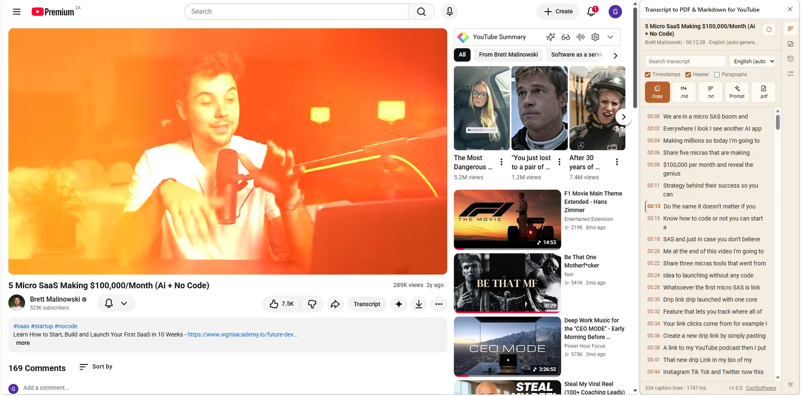

Read it beside the video
Every line, with its timestamp. Search filters the list and marks the hits; clicking a line seeks the player to that second — so the panel is a way to navigate a long talk, not just a way to export one.
The transcript is already there
Read it beside the player, search it, click a line to jump. Then take it — as Markdown, plain text or a PDF, or straight into ChatGPT, Claude or Gemini with a prompt of your own. No account, no upload, no speech recognition.

Under a minute, start to finish — open a video, find the line you want, take the transcript with you.
A three-hour podcast has one paragraph you actually needed. YouTube knows every word of it and shows you four lines at a time.
Four steps. The first two are the only ones that matter.
Any video with captions — manual or auto-generated. The panel only enables itself on YouTube, so the toolbar icon stays quiet everywhere else.
Click the toolbar icon, or press Alt + Shift + T. It opens beside the video rather than over it, so the video keeps playing while you read.
The transcript loads as a list of lines. Type in the search box to filter it, and click any line to jump the video to that moment.
Copy, .md, .txt and .pdf each hand you the transcript. Prompt sends it to an AI instead. The tick boxes above decide what is in it.
Six things, and nothing else.
Every line, with its timestamp. Search filters the list and marks the hits; clicking a line seeks the player to that second — so the panel is a way to navigate a long talk, not just a way to export one.
Prompt opens the transcript in ChatGPT, Claude, Gemini or anywhere else you name, with your instruction already in front of it. Keep as many prompts as you like — Summarise, Study notes, Pull quotes — and pick a default.
Read turns the transcript into a document you can work on — headings, bold, lists, quotes — with a Markdown toolbar and a live preview. Your edits are saved against that video, so the export is your version, not the raw captions.
Where a video has chapters, they become headings — so a three-hour transcript
is navigable instead of a wall. Timestamps become links back to that second of
the video, and tidying turns YouTube's >> speaker markers
into breaks. Nothing is reworded.
Copy to the clipboard, .md for Obsidian or Notion, .txt for anything that eats text, and .pdf written on your machine by the extension itself — no service in the middle.
Every transcript you open is kept in History, searchable by video and deletable one at a time or all at once. Your preferences, prompts and panel theme — System, Ink, Paper or Forest — stay on this device.
The four tabs down the right-hand rail.
Three tick boxes, remembered between videos. Timestamps keeps the clock against each line — useful for citing a moment, noise if you are quoting prose. Header puts the video title, channel and URL at the top, so a file found six months later still says where it came from. Paragraphs merges the raw caption lines into roughly minute-long blocks.
The dropdown lists the caption tracks YouTube offers: manual tracks, auto-generated ones, and auto-translations. Switching language refetches that track rather than translating locally, so what you export is what YouTube has. It hides itself when there is only one track to pick.
Settings holds the prompt list. Add, edit, delete, and mark one default — the instruction that rides in front of the transcript when you press Prompt. "Other…" lets you send it somewhere that is not one of the three named tools.
There is no speech recognition here. This reads the caption track YouTube already generated, which is why it is instant, free, and works on a three-hour podcast without heating up your laptop. It is also why a video with captions switched off has nothing to export.
Worth knowing before they surprise you. None of them are bugs.
The five things that actually go wrong.
Reload the YouTube tab. Extensions are not injected into tabs that were already open when they were installed or updated.
The panel deliberately only enables itself on YouTube tabs. On any other site the icon stays inert. Open a video first.
Usually a transient network hiccup or a rate limit. Press the reload arrow at the top of the panel. If it persists, reload the YouTube tab itself.
Long videos render in chunks so the panel stays responsive; give it a moment to finish. If it genuinely truncates, press reload — a partial caption fetch is retried from scratch rather than patched.
Edits are saved per video, on this device. Clearing the extension's storage, or deleting that video from History, takes them with it. Export before you clear anything you want to keep.
Everything happens in this browser. There is no account and no server of ours — the only thing that ever leaves is a transcript you explicitly send to an AI.
To read the caption track of the video you are watching, and to seek the player when you click a line.
To keep your preferences, your prompts, your edits, your transcript history and a small counter of how often exports succeed. On this device, never uploaded.
To save the file you asked for to your normal downloads folder.
To run this extension's own code on the YouTube page in order to read the caption data. Only on youtube.com, and only our code.
To show the transcript beside the video instead of covering it.
The usage counter is visible from the panel's Settings tab. It counts outcomes, never videos.
Open a video, press the icon, and take the transcript with you.